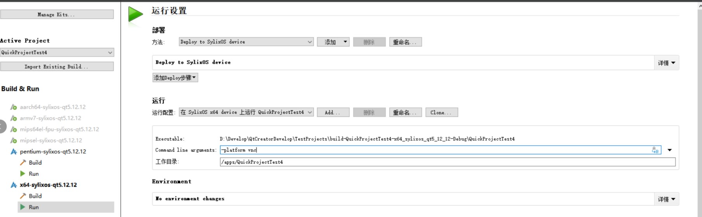

在22年的支持工作中，遇到了SylixOS x64服务器无法识别 USB 设备的情况。为尽快满足客户使用需求，建议客户使用 VNC 调试运行 QT 应用。
这里对具体方法进行记录。
VNC显示：
1.确认应用程序可以正常运行;
2.在SylixOS下设置环境变量QWS_DISPLAY并保存;具体操作步骤如下：
a.通过shell界面，env命令查看环境变量；
b.设置环境变量QWS_DISPLAY，例如：QWS_DISPLAY=VNC:sylixosfb:/dev/fb0;
c.通过命令varsave保存环境变量。
3.再次运行QT4应用即可通过VNC显示。
分辨率修改：可以通过修改系统内meun.lst来设置QT应用显示的分辨率。(QT5分辨率也可通过此方式修改)
meun.lst文件内容如下：
修改如图所示位置为需设置的分辨率，reboot后运行应用即可完成分辨率修改。
VNC显示以及分辨率修改：
1.确认应用程序可以正常运行；
2.在RealEvo-QtSylixOS开发工具中，点击左侧项目->点击构建与运行->选择构建所用的构建套件->点击所选套件下的运行进行配置；

3.在参数栏中输入参数-platform VNC:size=1280x800以设置VNC显示以及分辨率。
4.构建运行应用程序即完成设置。
vnc应用程序在Qt安装目录下\qtcreator-3.4.0\SylixOS\tools
原创内容使用 知识共享 署名-非商业性使用-相同方式共享 4.0 (CC BY-NC-ND 4.0) 协议授权。